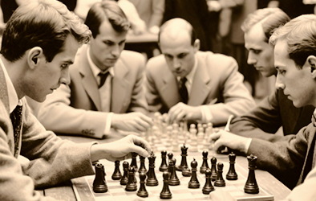
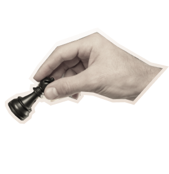
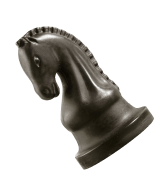
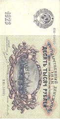
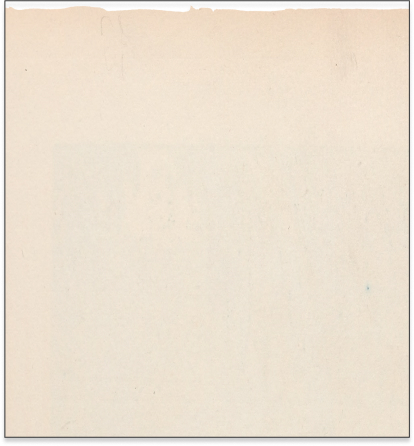
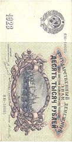
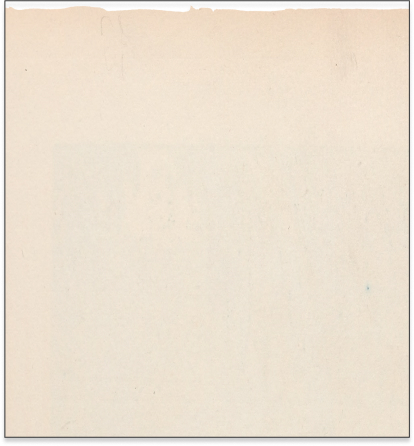
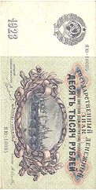
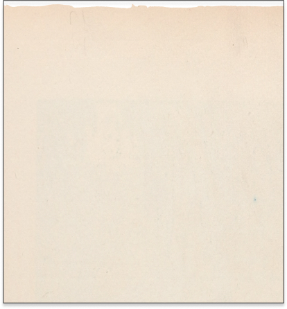

Чтобы поддержать Международный васюкинский турнир посетите лекцию на тему: «Плодотворная дебютная идея» 


 





| Место проведения: | Клуб «Картонажник» |
| Дата и время мероприятия: | 22 июня 1927 г. в 18:00 |
| Стоимость входных билетов: | 20 коп. |
| Плата за игру: | 50 коп. |
| Взнос на телеграммы: | 100 руб. 21 руб. 16 коп. |
| По всем вопросам обращаться в администрацию к К. Михельсону | |
Этапы преображения Васюков
Будущие источники обогащения васюкинцев
- Строительство железнодорожной магистрали Москва-Васюки
- Открытие фешенебельной гостиницы «Проходная пешка» и других небоскрёбов
- Поднятие сельского хозяйства в радиусе на тысячу километров: производство овощей, фруктов, икры, шоколадных конфет
- Строительство дворца для турнира
- Размещение гаражей для гостевого автотранспорта
- Постройка сверхмощной радиостанции для передачи всему миру сенсационных результатов
- Создание аэропорта «Большие Васюки» с регулярным отправлением почтовых самолётов и дирижаблей во все концы света, включая Лос-Анжелос и Мельбурн